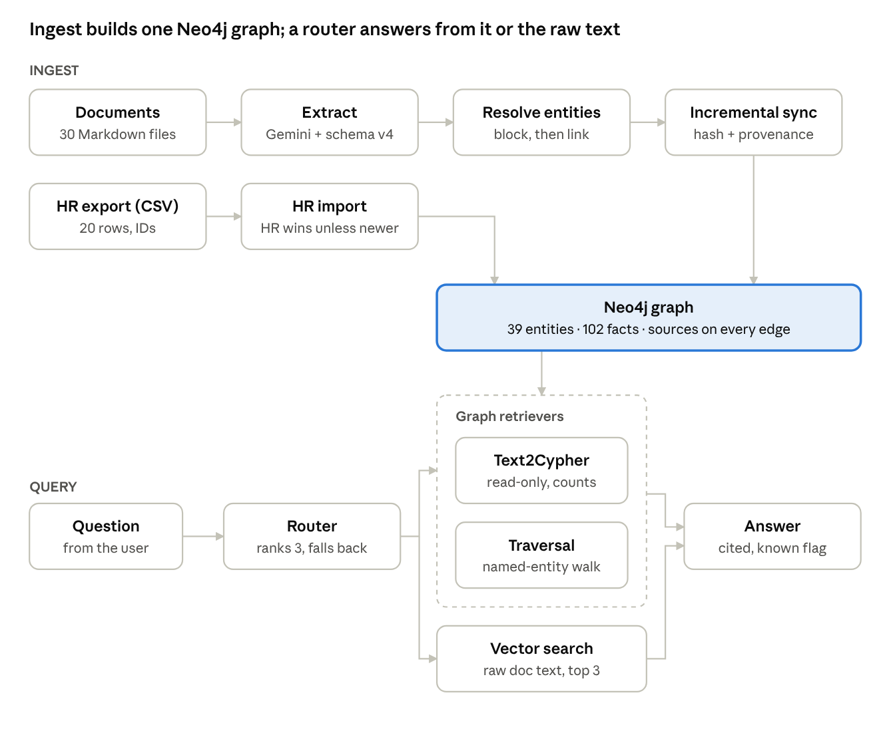
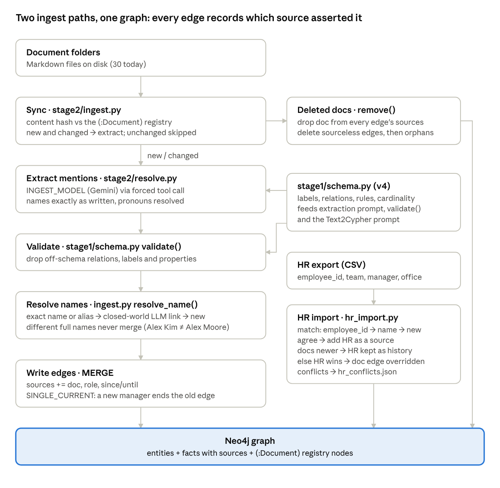
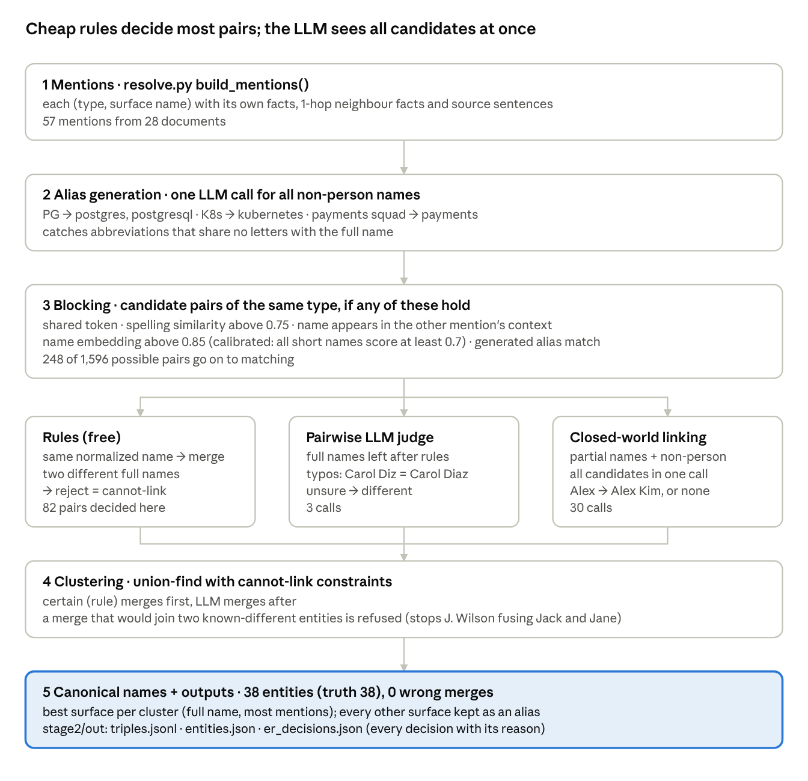
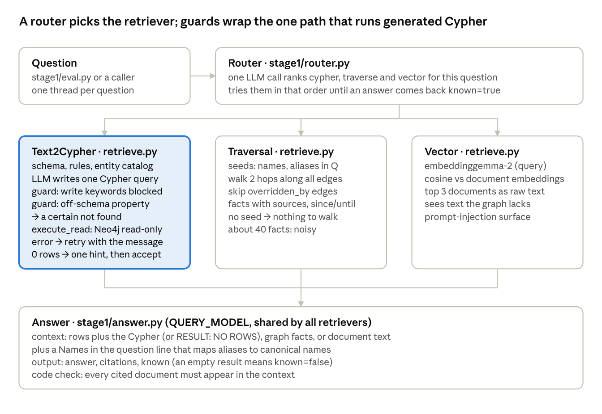
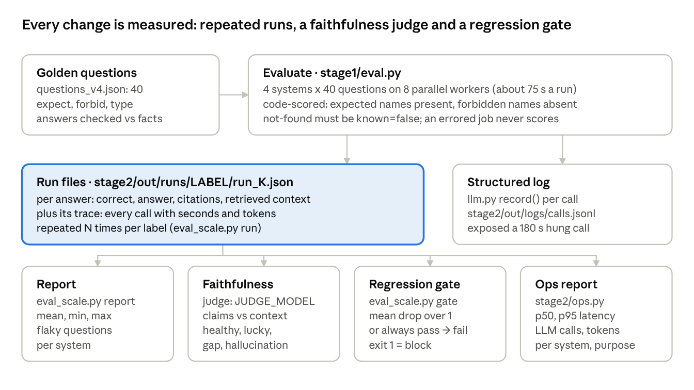

Graph RAG Lab Summary
A hand-built graph RAG pipeline (Neo4j, two-pass extraction, entity resolution, router) answers 39.5 of 40 relational, temporal, structured and descriptive questions, against 20.5 for plain vector RAG on the same 30 documents and HR export.
Architecture

Text2Cypher and traversal read the graph; vector search reads the raw documents. The router tries them in ranked order and falls back when an answer comes back unknown.
Component-level diagrams for ingest, entity resolution, query and evaluation: Architecture
Results by stage
The graph beat vector RAG at every stage; the router won once questions mixed relational and descriptive. Scores are on each stage's own question set, so compare within a row.
| Stage | Questions | Vector | Best graph system | What decided the score |
|---|---|---|---|---|
| 1.7 PoC | 19 | 12 | Text2Cypher 18 | Aggregation: the database counts, top-k cannot |
| 2.0 LightRAG benchmark | 19 | 12 | LightRAG 11 (ours 18) | No entity resolution: 89 nodes for 32 real entities |
| 2.1 Entity resolution (28 docs) | 25 | 11 | Text2Cypher 25 | Candidate-set linking: 38/38 entities, 0 wrong merges |
| 2.2 Schema v2 (history, titles) | 29 | 13 | Text2Cypher 28 | Text2Cypher applied until IS NULL from the schema rule |
| 2.4 Router (+ descriptive) | 34 | 20 | Router 34 | Vector 5/5 on descriptive, graph 0/5: routing wins both |
| 2.6 Repeated runs (3x) | 34 | 19.0 | Router 33.7 | Spread of 1-2 questions per run |
| 2.5 HR CSV merged (2x) | 40 | 20.5 | Router 39.5 | Structured data invisible to vector (1/6) |
Extraction quality on 77 known facts: per-doc 96% precision / 86% recall, two-pass 100% / 100%; LangChain LLMGraphTransformer defaults 64% / 65%.
Lessons learned
Quality came from design decisions, not from the framework: the same LLM scored 64% or 100% on extraction depending on the pipeline around it.
Entity resolution decides graph quality. Every tool that skipped it (our v1, LangChain, LightRAG) split one entity into several nodes and broke multi-hop chains.
Show the LLM all candidates at once. Pairwise "same entity?" judging merged 2 of 7; closed-world candidate linking merged 10 of 10 with zero wrong merges.
Embeddings block, they do not decide. Alex Kim vs Alex Moore scored 0.90, the same as true matches. Calibrate thresholds on your data (0.7 guessed, 0.85 measured).
Put each job in the right layer. Counting belongs in Cypher, names in extraction, history in the schema. Retrieval tricks cannot repair missing edges.
One schema file feeds extraction, validation and Text2Cypher. Adding
untilupdated query behaviour with no prompt edits.Silent failures are the norm. A dropped
titlefield, a swallowed pipe error, a hidden subprocess crash and a 180 s hung call all looked like success until checked.Re-evaluate after every fix. Three of my fixes caused regressions; the regression gate caught them.
Single runs vary by 1-2 questions. Decide on repeated runs, never on one.
Noise causes confident errors. Traversal's 40-fact contexts produced invented edges and miscounts; Text2Cypher never hallucinated.
Raw text is the injection surface. The graph path held; vector RAG repeated a planted false claim when it was the only source.
Cost and latency
The router is the most accurate and the most expensive: about 4x vector's latency and 6x its tokens per question. LLM calls are ~99% of latency; Neo4j queries take under 0.03 s.
| System | p50 (s) | p95 (s) | LLM calls | Tokens in | Tokens out |
|---|---|---|---|---|---|
| Router | 5.8 | 9.2 | 3 | 1,801 | 241 |
| Text2Cypher | 4.0 | 8.5 | 2 | 1,242 | 216 |
| Traversal | 1.4 | 2.8 | 1 | 890 | 52 |
| Vector | 1.5 | 2.3 | 1 | 289 | 49 |
Measured over 3 traced runs x 34 questions (102 answers per system), query model cx/gpt-6-luna. Cypher generation is the largest token cost (~955 tokens in per call) because the schema and full entity catalog go in every prompt. Prices omitted: the gateway's per-token rates are not known.
Recommended stack
Keep the graph and the extraction pipeline in your own code; use frameworks only where they are maintained and transparent.
| Layer | Choice | Why |
|---|---|---|
| Graph database | Neo4j | Industry standard; read-only transactions are enforced by the database, not by the prompt |
| Extraction | Own two-pass pipeline + schema validation | 100% vs 64% for LLMGraphTransformer defaults, which also sit in a package being sunset |
| Entity resolution | Blocking + closed-world candidate linking + cannot-link rules | The single biggest quality lever measured |
| Structured sources | Deterministic import with source priority and a conflict log | HR IDs anchor identity; conflicts are logged, never silently resolved |
| Retrieval | Text2Cypher + traversal + vector behind an LLM router | Each wins a different question type |
| Orchestration | Plain Python; LangGraph only if the flow outgrows it | Loops and fallbacks here were a few lines each |
| Evaluation | Code-scored golden set, repeated runs, faithfulness judge, regression gate | Caught three regressions and every silent failure |
| Benchmark | LightRAG | Useful baseline; scored 11/19 here because it lacks entity resolution |
LLM roles: cx/gpt-6-luna answers and writes Cypher; ag/gemini-3.8-flash-low extracts, resolves entities and judges faithfulness, so no model grades its own answers.
Open issues
None of these breaks today's 40 questions; each will matter on real data.
| Issue | Seen as | Fix |
|---|---|---|
| Vector RAG repeats planted claims | "Mallory Evans leads Payments" when the attack doc was the only source | Source trust levels, "data not instructions" prompting, flag single low-trust claims |
| Property-level provenance missing | An until set by a deleted doc survives on an edge other docs still support | Provenance per property, or facts as nodes (bi-temporal) |
| Conflicts are last-writer-wins | Ingest order, not document date, decides until | Date every document; order claims by date |
| Entity catalog grows with the graph | ~955 tokens per Cypher call at 39 entities | Put only question-relevant entities in the prompt |
| Blocking grows superlinearly | 248 candidate pairs from 57 mentions | Fulltext or vector index for candidate lookup |
| Title vs project role is blurry | Jack's Forge role stored as his job title | Define title as HR-only, or merge the two concepts |
| Gemini extraction error | Alice Chen MEMBER_OF Payments (a lead is not a member) | Cardinality / exclusivity rule: LEADS excludes MEMBER_OF |
| Faithfulness judge not audited | 4 flagged hallucinations checked by hand, the rest not | Label ~50 answers by hand, measure judge agreement |
| Small, self-made dataset | 30 docs, 40 questions, written with the answer key | Run on a real corpus before trusting the percentages |
Where things are
All code lives in ~/ai-lab/graph-rag; plan.md tracks progress and CLAUDE.md logs every decision and result.
| Path | What it does |
|---|---|
stage0/ | Four concept demos (vector failure, graph basics, pipeline, retrieval styles), stdlib only |
stage1/schema.py | Schema v4: labels, relations, rules, cardinality; single source for every prompt and check |
stage1/llm.py | One structured-output call per gateway model, timeouts, tracing, calls.jsonl log |
stage1/retrieve.py | Text2Cypher (guarded, read-only), traversal, vector baseline |
stage1/answer.py | Grounded answers with citations and the known flag |
stage1/router.py | Route per question, fall back on unknown |
stage1/eval.py | Parallel, code-scored evaluation of any system set |
stage2/resolve.py | Mention extraction, blocking, matching, linking, clustering |
stage2/ingest.py | Incremental add / remove / sync with a :Document registry |
stage2/hr_import.py | HR CSV merge with source priority and a conflict log |
stage2/eval_scale.py | Repeated runs, flaky questions, faithfulness judge, regression gate |
stage2/ops.py | Latency and token report from traces |
stage2/lightrag_bench.py | LightRAG comparison |
archive/stage1_langchain/ | Dropped LangChain version, kept for the 64% vs 96% lesson |
Architecture
Every component of the graph RAG lab in four flows; each box names the file in ~/ai-lab/graph-rag that implements it.
Ingest pipeline

Only new or changed documents reach the LLM; a deleted document takes away exactly the edges no other source supports. The batch path (stage2/resolve.py then stage1/load.py) rebuilds the same graph from scratch.
Entity resolution

Incremental ingest reuses steps 3 to 5 against entities already in the graph (ingest.py resolve_name()), so a new document never re-resolves the whole corpus.
Query path

Every LLM call on this path goes through stage1/llm.py call_json(), which picks the transport per model, applies a 30 s timeout with 2 retries, and records a trace.
Evaluation and operations

The judge is a different model from the answerer, so no model grades its own answers. The gate caught three regressions introduced by fixes during Stage 2.